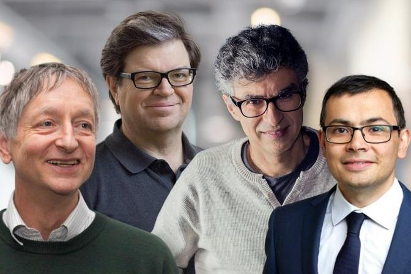

INTRODUCCION
La inteligencia artificial ya esta en boca de todos y cientos de empresas se apresuran a incluirla en sus dispositivos y servicios. El problema es que poca
gente sabe lo que es. ¿Como funciona?, ¿Hasta donde puede llegar?, ¿Cuales son sus limitaciones?
es la revolucion mas importante de la tecnologia desde que se invento la informatica. La inteligencia artificial va a cambiarlo todo -ya lo esta haciendo-,
aunque no queda demasiado claro cuando, ni como...ni por que. Es la gran paradoja de la IA.Todo el mundo habla de ella, pero pocos saben como funciona, o lo que realmente hace.
La capacidad de que las maquinas piensen y razonen por su cuenta puede ser el avanzemas importante de la tecnologia en los ultimos siglos, pero ¿y si un dia una inteligencia artificial decide que los humanos no son
necesarios? Parece una mala pelicula de cencia ficcion, pero es un temor que comparten algunas de las mentes mas brillantes de la actualidad, desde Bill Gates o Elon Musk al añorado Stephen Hawking.

Uno de los padres de la inteligencia artificial, Marvin Lee Minsky; estaba convencido de que la IA salvaria a la raza humana.Pero tambien profetizo en 1970 lo siguiente: "Cuando los ordenadores tomen el control, quiza ya no lo podamos volver a recuperar. Sobrevivimos mientras ellos no lo toleren. Si tenemos suerte, quiza decidan tenernos como sus mascotas".
Eso dijo antes de que existiera la informatica domestica e internet...¿Que tiene que todo el mundo asegura que es el mayor avanze de nuestro tiempo, pero al mismo tiempo la, mayor amenaza? La IA es una revolucionpor que supone una forma completamente nueva de que un software, un robot, ponga en practica una tarea que le encomendamos.